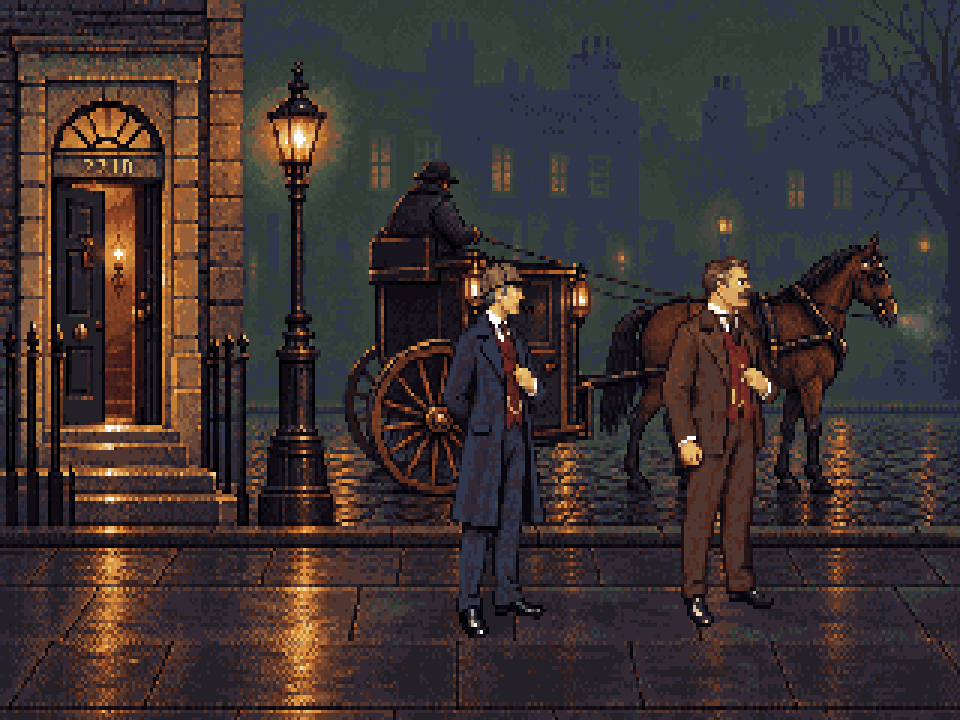

Three new room studies using the 221B camera and pixel treatment: a shallow foreground for the cast, an opening or object band, and quieter space beyond. Native 320×200, 64 colours, 1.2 pixel aspect.

These are review assets. The game still uses its registered rooms. The horizontal scale proof slides a standing master; it is not a new walking animation.
Level 45 mm camera; horizon 0; full size at feet y176. Five foreground checks per room, plus rear checks for the street and workshop. The stair below the landing remains unwalkable and unseen.
| Room | Blender | Pixelorama |
|---|---|---|
| Baker Street | Planes | Layered room |
| Workshop | Planes · Clock hinge | Layered room |
| Hidden stair | Planes | Layered room |
Painting shifts some props from the blockout. The final masks and measured hotspots are in the handoff. Original workshop rain, weather, mouse and pendulum overlays need refitting before they can be registered over this new picture.
Workflow and source notes · Study manifest · Native export check · 221B r33